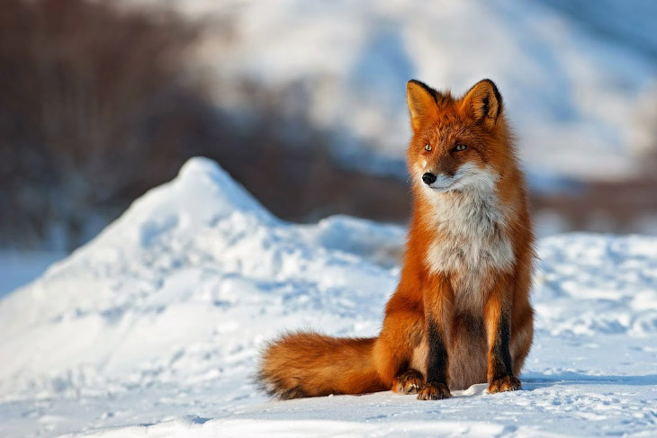

collections
-

- 
-

-

-

why
De vossenvacht is over het algemeen roodbruin, maar kan ook beige tot helderrood zijn, of zilverkleurig tot zwart (vooral in de bergen). De donkere variëteiten hebben soms andere namen, zoals brandvos of kruisvos.[3][4][5] Ook albino's komen voor. De oren zijn aan de achterzijde zwart, evenals de "sokken", de onderbenen. Sommige dieren hebben een witte staartpunt; veel vossen hebben in ieder geval enkele witte haren rond het puntje van de staart. De bovenlip is wit, evenals de bef. Op de wangen zit bij veel vossen een zwarte of bruine "traandruppel". Sommige dieren hebben een staalgrijze keel en buik, met een witte ster op de borst. In de paartijd heeft het vrouwtje, de moervos, een roze glans over de vacht aan de onderzijde.
What
Vossen jagen solitair, meestal 's nachts en in de schemering, maar in onverstoorde gebieden jaagt hij liever overdag. De vos is een opportunist: hij eet bijna alles. Hij kan hard rennen, tot zestig kilometer per uur, alhoewel zes tot dertien kilometer per uur de normale snelheid is. Zijn prooien zijn meestal kleine en middelgrote prooidieren, zoals grote kevers, muizen en andere knaagdieren, konijnen, hazen, vogels en eieren, regenwormen en egels. Ook vruchten en bessen (vooral bramen) worden gegeten, evenals aas, placenta's en afval. De vos is dus een omnivoor, maar ook een opportunist: in de Nederlandse Oostvaardersplassen leeft hij bijvoorbeeld in het voorjaar vooral van ganzenkuikens. De vos negeert kikkers en padden en vindt mollen en spitsmuizen niet lekker.